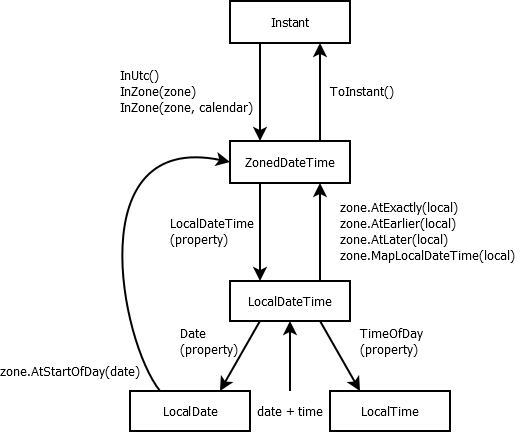

This is a companion page to the "core concepts quick reference", and "core types" pages, describing when it's appropriate to use which type, and how to convert between them.
Ultimately, you should be thinking about what data you really have, and what it really represents. Although the guidelines here will give some ideas about how you can think about that, you shouldn't expect them to be appropriate for every situation. These aren't rules to be blindly followed - they're guidance while you're coming up to speed with the novelty of having to think about this sort of thing in the first place.
Broadly speaking, there are two major sources of date and time data: clocks, and the brains of users.
I'm using "clock" here as anything which is used to represent the
current time, in whatever form it does so. You may receive the
value as part of a web service request, you may request it from an
IClock, it may be the "last
modified" part of a file-system entry, it may be a database
timestamp: all of these are trying to represent the current point in
time in some fashion.
Compare that with a value entered by a user: a meeting request time, a credit card expiry date, an alarm clock time. You may still have retrieved the value from a database, or been given it in a web request, or something similar - but at some point, a user decided what the value would be.
There are some areas of overlap, of course: a user can enter their date of birth, which is a coarse representation of a specific clock time. Or you may have someone manually logging events somewhere, with that log later being reconciled with system-generated events. These can sometimes lead to grey areas with no one "right" decision, but I would still tend to consider these as user data.
One indicator as to the data source is the kind of values you end up with - users tend to favour round values (whole numbers of minutes, for example) whereas system-generated values are typically more uniform. Of course the precision of the system-generated value may still be coarse, although it's relatively rare to see such values with a precision of worse than a second.
Clock-related "point in time" values are usually best represented as
Instant values in Noda Time. Even
if they have been recorded in a particular time zone, that time zone
is rarely relevant other than as a way of converting the local time
to a universal one. Likewise the calendar system isn't really
relevant to the real meaning of the data: the instant at which
something has occurred.
Note that a clock-related value doesn't have to represent a moment
which has already passed - for example, if you want to schedule
something to start "one hour from now" you would start with "now"
and add a duration of an hour: it's still based on a value read
from a clock, so it's still reasonable to represent it with an
Instant.
Note that scheduling something "a month from now" becomes trickier,
as "one month" isn't a fixed duration; it requires you to know which
calendar and time zone you're interested in. In that case you'd need
to convert to a LocalDateTime, add the month and then probably
convert back to an Instant (via ZonedDateTime). At that point,
you should also consider whether your original requirements of "add
a month" are actually specific enough... Noda Time will force you to
consider what time zone you're interested in, how to handle
ambiguities converting back and so on.
If a user has entered the value (whether directly into your application or not), Noda Time offers five types which may be appropriate:
It's usually easy to spot when the last two are appropriate: if
you've only got a date or only got a time, use the obvious
corresponding type. Of course you may well want to then combine this
with the other half for some default value (e.g. "today") to come up
with a full LocalDateTime - but the representation for "what the
user has entered" is clear.
The choice between ZonedDateTime and LocalDateTime is trickier.
If you don't have any knowledge of the user's time zone, you're
pretty much stuck with LocalDateTime, but even if you do know
the time zone, it may not be appropriate to use it. Is the user
intending to indicate a specific instant, or just a date and time?
For example, suppose you were creating an alarm for a mobile phone -
the user's time zone may change between when it's first scheduled,
and when it actually rings... you need to decide (and make it clear
to the user) whether that time zone change should affect the alarm
or not.
Sometimes - particularly when parsing values from headers - you may not
know the user's full time zone, but you do know the offset from UTC at
that particular point in time. In that case, OffsetDateTime is the most
appropriate choice: it preserves the offset information you genuinely have,
but without giving the impression of knowing the "real" time zone.
If it's definitely meant to represent an instant in time, then
Instant may be even more appropriate than ZonedDateTime - it
depends on what information you'll need later on. In particular,
you'll lose the information about the calendar and time zone, which
makes it impossible to perform calendrical arithmetic without
potentially surprising the user. This information may very well be
crucial to using the value correctly.
For example, suppose we have a ZonedDateTime representing a
meeting which has just taken place. The user then asks the system to
schedule another meeting "the same time next month" - when exactly
would that be? The time zone - including any transitions - makes a
big difference here. Indeed, if two users in different time zones
have a meeting and then decide to repeat it a month later "at the
same time" they'll need to pick one time zone to be a "master" as
otherwise they could miss each other.
It's this sort of situation where the familiar advice of "store everything in UTC" falls down: you need to be aware of when the time zone is important. Storing UTC values when the time zone is not merely unimportant, but actively unhelpful (as in our mobile phone alarm example) is reasonable so long as you're aware that you're really just representing a local (or "zone-less") value and happening to use UTC as a simple way of storing it. You mustn't confuse that value with one which really is an instant in time at that moment in UTC.
The following diagram shows various different ways of converting between the types.

Note that I haven't shown every possible option here - in particular
you can often use the constructor for the target type as an
alternative to calling a method on the source type, and all the
operators have method equivalents. (I also haven't highlighted the OffsetDateTime conversions,
as they're generally very straightforward.)
Most of these are pretty simple, but a few are worth calling out
specifically. The biggest "gotcha" is converting LocalDateTime to
ZonedDateTime - it has some corner cases you need to consider. See the "times zones" section of
the core concepts guide and the DateTimeZone documentation
for more information.
Introduction
Core
Advanced
Library